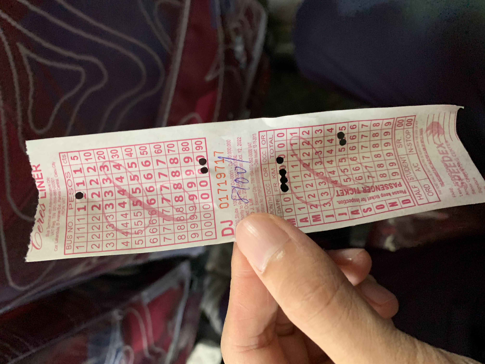

宿霧遊學-希瑪拉教堂(Simala Church)一日遊
宿霧最大的教堂

有幸造訪宿霧最大的教堂希瑪拉教堂，此文主要紀錄當時的行程規劃、偶然的參與彌撒與雄偉的建築。
日期 : 2019.12.15
前言
來到宿霧一定會聽過這有名的希瑪拉教堂，其實是一座修道院因為其相似城堡的教堂而聞名。位於Sibonga的Lindogon村的一個小山上。但因為此區離宿霧市區有段距離，通常對於外國人的口袋景點並不是非常熱門，畢竟宿霧的景點選擇非常多，所以大部分來此地的都是當地持有天主教信仰的菲律賓人。而我因為宗教的不同，當地友人就邀請我一起體驗這雄偉的教堂跟天主教文化。
宿霧市區➝希瑪拉教堂交通選擇
如果旅伴經費充裕，建議直接以包車的方式(私車)，不僅便利快速且可以直達目的地。但因為同行友人為當地人，剛好我想要來個深度旅遊，最後是採用搭巴士的方式。(啟程是還好有座位，但回程時沒座位就真的得直直站到市區😅)
-
搭計程車(Grab): 使用Grab叫車，直接從宿霧市區到希瑪拉教堂大概要花費 PHP 2,000(依據時間不同，也有可能會在回程時叫不到車)。
-
搭私車: 其實我最推薦的就是這種，方法就是直接上各大旅遊平台購買行程，包司機直接從指定點到希瑪拉教堂，遇到好司機路上也能聊個天，體驗一下不同文化民情。結束後也不用趕時間或是擔心太晚叫不到車。
-
巴士: 最省錢的行程，可以體驗跟當地人一起搭巴士(非常擁擠的那種)，因為巴士到達的地點還是離教堂有段距離，最後還需乘坐habal habal摩托車才能到達。
巴士 + habal habal(摩托車) 詳細攻略
我就是選擇這個路線，以下為當時的細節紀錄。
-
需先至Cebu South Bus Terminal等待前往教堂的班次，目的地可以選Oslob或是Liloan方向，需在中途Simala下車。 車費為 PHP 100，交通時間大概需要兩個小時。
(建議不管是在車站還是車上都可以直接跟車站管理員或是司機告知自己要去Simala Church，詢問該在哪裡等車與請司機提醒何時下車。)
巴士票根，中途會有剪票員負責在票上打孔，其實我看不太懂打孔的規則😆 -
到達後，因為還離教堂有段距離，建議可以直接搭habal-habal(摩托車)直達教堂，我到時路上蠻多在等待的摩拖車司機，價格就是因人而異，大約每人PHP 20，一台車可以載兩人，在台灣大概就是危險駕駛。
同行友人是直接跟司機談好往返價，好處是價格可能可以壓更低還有回程不怕找不到司機，彼此用WhatsApp聯絡，不過要這樣做就要考慮自己的英語程度了，因為宿霧鄉下地區的人英文不太好口音又超重，有可能會無法溝通。
搭乘habal-habal的路途可以近距離體驗到原始鄉村，中途看到很多羊，但因為當時沒戴安全帽又三貼真的是害怕極了，忘了拿起相機紀錄這一切。😂
希瑪拉教堂
經過了兩個小時的車程，終於到了，可以看到遠處山丘上的教堂。
然後就是參加正在舉行的彌撒，這是我第一次參加這種宗教活動，覺得來參與的每個人都好虔誠。教堂內的氣氛很莊嚴榮種。而因為過程中大家都是使用宿霧語，我可以說是完全聽不懂，看大家做什麼就跟著做啦。😎

彌撒時間
禮拜一➝禮拜五: 12:00
禮拜六➝禮拜日: 12:00、15:00
彌撒結束之後可以參觀教堂的二樓，需要拖鞋才可進入，免入場費，除了展示各種不同種類的聖母瑪麗亞還有一些歷史古物遺跡。也提供信徒膜拜與還願，也蠻多人來這請願的，很多人使用小紙條寫著自己的願望，丟入請願箱並祈禱。無宗教信仰的我處在這其實有點尷尬，但還是盡我所能的融入其中。


返回宿霧市區
因為真的是一個蠻豐富的行程，導致我們在教堂附近待到很晚，回到等待巴士的地區已經很晚了，加上又有一堆人在等車，車次間距久又沒有明顯的班表。當時真的很害怕，會不會搭不上末班車。😂
等待巴士的地方真的非常的原始。好險最終有上車，不過是以全載滿的情況下，站在走道上回程。沒認識的人帶領還真的連哪裡該下車都不知道。
結語
很開心有機會可以來到此地，以我當時的語言程度與膽量根本不敢嘗試獨自旅行。華麗莊嚴的建築，路途上的鄉村景色，這次旅遊真的是非常愉悅，且讓我體驗到不一樣的宗教與文化，雖然從小讀的是天主教的高中，但因為家庭沒有相關的信仰，並沒有深入了解，更沒有參與過天主教的各種活動。第一次參與彌撒就是在宿霧，備感榮幸。